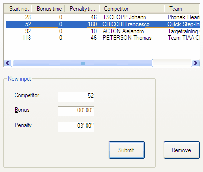

The Corrections tab sheet is always the last tab sheet in the Arrival dialog, and lets you enter individual, incidental corrections for this half stage.

Corrections tab sheet
Enter the competitor no. for which you want to enter a correction. Also enter a bonus time or penalty time. When Submit is clicked, the data is submitted and the correction is displayed in the list.
You can also select one or multiple corrections in the list, change their bonus time and penalty time, and click Submit again to apply the entered corrections to the entire selection.
When you select one or multiple corrections in the list, and you click Declass., the competitors are moved back to the available list.
Note: